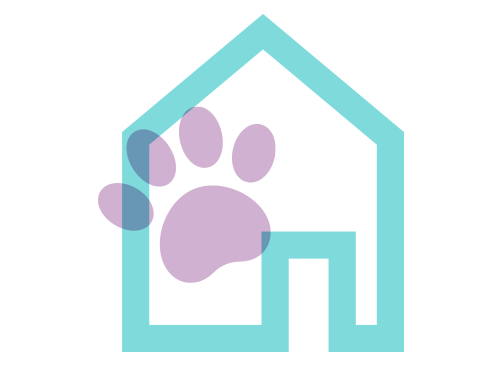
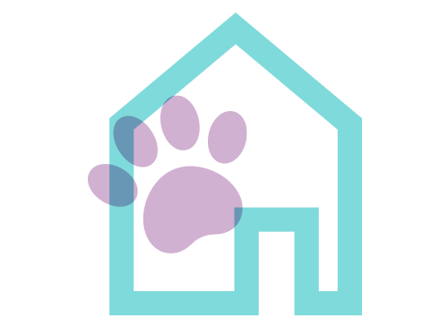

It's easy to find a dog or cat who's
right for you at a shelter or rescue
group. Simply
enter your zip code
above to start your search.
Once you find a pet, click "learn
more about me" to get contact info
for their shelter or
rescue. Contact
them to learn more about how to
meet and adopt the pet.
The rescue or shelter will walk you
through their adoption process.
Prepare your home for
the arrival
of your dog or cat to help them
adjust to their new family.
SHELTER PET CUDDLE CAPTAIN
NAVY VET BRIAN & TOMMY
THE SHELTER PET PROJECT PRESENTS
OLIVIA MUNN, FRANKIE & CHANCE

THE PERFECT SHELTER PET TEAM
LOGAN, LEO, & JULIUS
SEARCH FOR A PET
ABOUT OUR CAMPAIGN
CONTACT
PRIVACY POLICY
TERMS & CONDITIONS
© Copyright 2011-2022 Shelter Pet Project
The Shelter Pet Project Search is provided as a service to potential adopters. Listings for adoptable animals are provided courtesy of Adoptapet.com. The information in these listings is not reviewed or verified by the Shelter Pet Project,
the Humane Society of the United States, Maddie’s Fund, or the Ad Council. For more information, please see our Terms & Conditions.